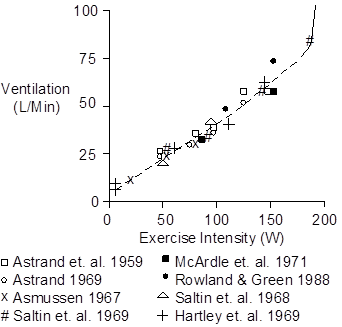
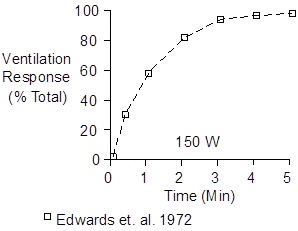
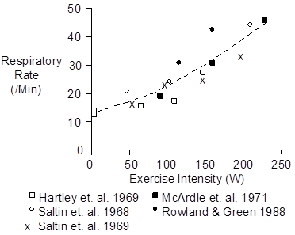
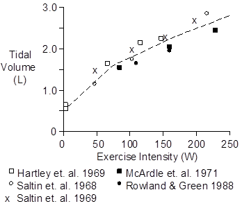
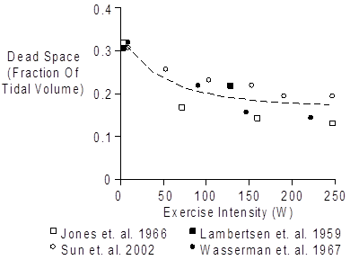
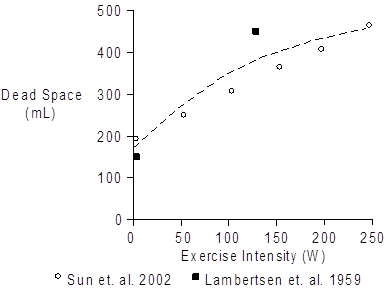
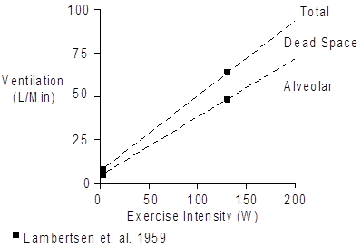

Exercise > Ventilation
 Total Ventilation
Total Ventilation
Total ventilation, also called minute ventilation and minute volume, increases with the intensity of aerobic exercise.

When the workload’s oxygen demands approach maximum oxygen uptake, no further increase in aerobic work is possible. Instead, anaerobic metabolism begins, blood lactic acid increases, blood pH falls, and ventilation is stimulated. This is depicted as the solid line in the upper, right-hand corner of the figure above. Note that this increase in ventilation does nothing useful. Instead, it signals that the end of the exercise session is close at hand (see also Skeletal Muscle Afferent Nerves).
Ventilation does not increase instantaneously, but instead increases quickly and smoothly, with a time constant of about 1 minute (Edwards et. al. 1972), as shown below.

Respiration Rate
An increase in respiration rate contributes to increased ventilation in exercise, as shown below.

Tidal Volume
An increase in tidal volume also contributes to increased ventilation in exercise.

Dead Space
Dead space is the part of tidal volume that does not exchange gas. It is often described as a fraction or percent of tidal volume.

Dead space as a fraction of tidal volume is typically 0.33 at rest. Dead space fraction falls in proportion to the severity of exercise, to values of 0.15 to 0.20 in severe exercise.
Given tidal volume data and fraction data, dead space can be described as a volume (mL).

Alveolar Ventilation
Total ventilation can be divided into alveolar ventilation (ventilation that exchanges gas) and dead space ventilation (ventilation that doesn’t exchange gas).

References
Asmussen, E. Exercise and the regulation of ventilation. Circ. Res. 20 (Suppl. 1):132-145, 1967.
Åstrand, I. Aerobic work capacity in men and women with special reference to age. Acta Physiol. Scand. 46(Suppl. 169):1-92, 1960.
Åstrand, I., P.-O. Åstrand and K. Rodahl. Maximum heart rate during work in older men. J. Appl. Physiol. 14:562-566, 1959.
Edwards, R.H.T., D.M. Denison, G. Jones, C.T.M. Davies and E.J.M. Campbell. Changes in mixed venous gas tensions at start of exercise in man. J. Appl. Physiol. 32:165-169, 1972.
Hartley, L.H., G. Grimby, Å. Kilbom, N.J. Nilsson, I Åstrand, J. Bjure, E. Ekblom and B. Saltin. Physical training in sedentary middle-aged and older men. III. Cardiac output and gas exchange at submaximal and maximal exercise. Scand. J. Clin. Lab. Invest. 24:335-344, 1969.
Jones, N.L., G.J.R. McHardy, A. Naimark and E.J.M. Campbell. Physiological dead space and alveolar-arterial gas pressure differences during exercise. Clin. Sci. 31:19-29, 1966.
Lambertsen, C.J., S.G. Owen, H. Wendel, M.W. Stroud, A.A. Lurie, W. Lochner and G.F. Clark. Respiratory and cerebral circulatory control during exercise at .21 and 2.0 atmospheres inspired pO2. J. Appl. Physiol. 14:966-982, 1959.
McArdle, W.D., R.M. Glaser and J.R. Magel. Metabolic and cardiorepiratory response during free swimming and treadmill walking. J. Appl. Physiol. 30:733-738, 1971.
Rowland, T.W. and G.M. Green. Physiological responses to treadmill exercise in females: adult – child differences. Med. Sci. Sports Exerc. 20:474-478, 1988.
Saltin, B., G. Blomqvist, J.H. Mitchell, R.L. Johnson, Jr., K. Wildenthal and C.B. Chapman. Response to exercise after bed rest and after training. Circulation 38(Suppl. 7):1-78, 1968.
Saltin, B., L.H. Hartley, Å. Kilbom and I. Åstrand. Physical training in sedentary middle-aged and older men. II. Oxygen uptake, heart rate, and blood lactate concentration at submaximal and maximal exercise. Scand. J. Clin. Lab. Invest. 24:323-334, 1969.
Sun, X.-G., J.E. Hansen, N. Garatachea, T.W. Storer and K. Wasserman. Ventilatory efficiency during exercise in healthy subjects. Amer. J. Respir. Crit. Care Med. 166:1443-1448, 2002.
Wasserman, K., A.L. Van Kessel and G.G. Burton. Interaction of physiological mechanisms during exercise. J. Appl. Physiol. 22:71-85. 1967.